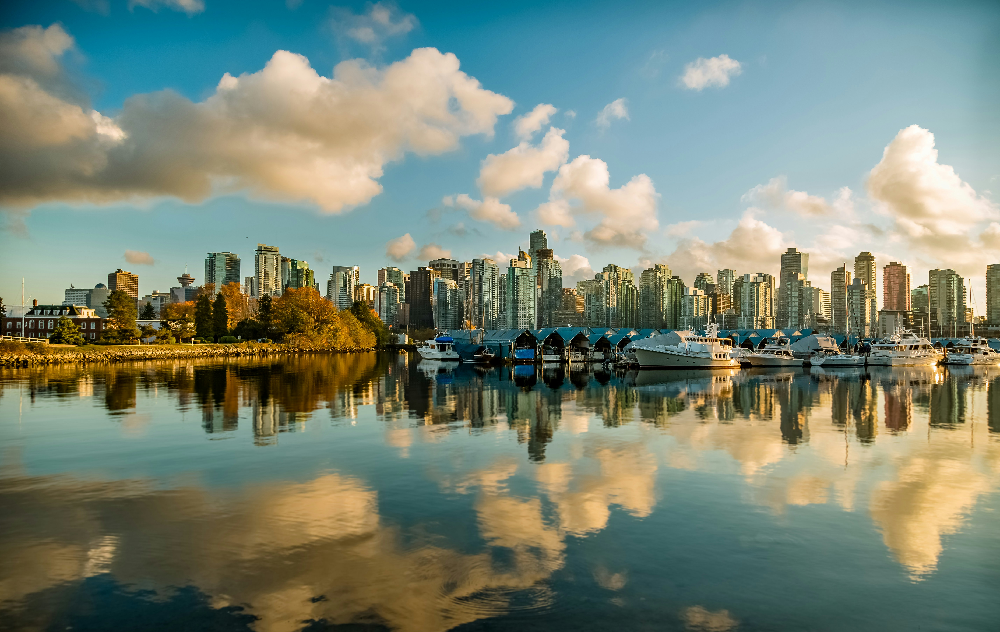

Canada
Canada is a country in North America. Its ten provinces and three territories extend from the Atlantic Ocean to the Pacific Ocean and northward into the Arctic Ocean, making it the world's second-largest country by total area, with the world's longest coastline. Its border with the United States is the world's longest international land border.
The country is characterized by a wide range of both meteorologic and geological regions. With a population of just over 41 million people, it has widely varying population densities, with the majority residing in urban areas and large areas of the country being sparsely populated.
5 Largest Cities in Canada by Population and by Land Area
- Toronto (6.2 million residents)
- Montreal (4.2 million residents)
- Vancouver (2.7 million residents)
- Calgary (1.6 million residents)
- Edmonton (1.5 million residents)
Now let's look at them in more detail
-
Toronto

Toronto is the most populous city in Canada and the capital city of the Canadian province of Ontario. With a population of 2,794,356 in 2021,[10] it is the fourth-most populous city in North America. The city is the anchor of the Golden Horseshoe, an urban agglomeration of 9,765,188 people (as of 2021) surrounding the western end of Lake Ontario,[11] while the Greater Toronto Area proper had a 2021 population of 6,712,341.[10] As of 2024, the CMA had an estimated population of 7,106,379.[12] Toronto is an international centre of business, finance, arts, sports, and culture and is one of the most multicultural and cosmopolitan cities in the world.
-
Montreal

Montreal[a] is the largest city in the province of Quebec, the second-largest in Canada, and the ninth-largest in North America. It was founded in 1642 as Ville-Marie, or "City of Mary",[19] and is now named after Mount Royal,[20] the triple-peaked mountain around which the early settlement was built.[21] The city is centred on the Island of Montreal[22][23] and a few, much smaller, peripheral islands, the largest of which is Île Bizard. The city is 196 km (122 mi) east of the national capital, Ottawa, and 258 km (160 mi) southwest of the provincial capital, Quebec City. As of 2021, the city had a population of 1,762,949,[24] and a metropolitan population of 4,291,732,[25] making it the second-largest metropolitan area in Canada. French is the city's official language.[26][27] In 2021, 85.7% of the population of the city of Montreal considered themselves fluent in French while 90.2% could speak it in the metropolitan area.[28][29] Montreal is one of the most bilingual cities in Quebec and Canada, with 58.5% of the population able to speak both French and English.[30]
-
Vancouver
Vancouver[a] is a major city in Western Canada, located in the Lower Mainland region of British Columbia. As the most populous city in the province, the 2021 Canadian census recorded 662,248 people in the city, up from 631,486 in 2016. The Metro Vancouver area had a population of 2.6 million in 2021, making it the third-largest metropolitan area in Canada. Greater Vancouver, along with the Fraser Valley, comprises the Lower Mainland with a regional population of over 3 million. Vancouver has the highest population density in Canada, with over 5,700 inhabitants per square kilometre (15,000/sq mi),[6] and the fourth highest in North America (after New York City, San Francisco, and Mexico City).
-
Calgary

Calgary is a city in the Canadian province of Alberta. As of 2021, the city proper had a population of 1,306,784 and a metropolitan population of 1,481,806 making it the third-largest city and fifth-largest metropolitan area in Canada.[11]
-
Edmonton

Edmonton is the capital city of the Canadian province of Alberta. It is situated on the North Saskatchewan River and is the centre of the Edmonton Metropolitan Region, which is surrounded by Alberta's central region. It anchors the northern end of what Statistics Canada defines as the "Calgary–Edmonton Corridor".[13]